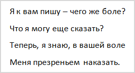
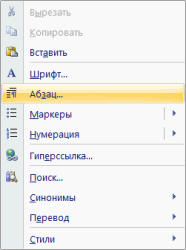
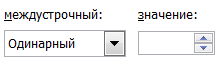
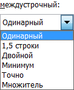
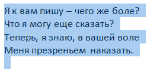
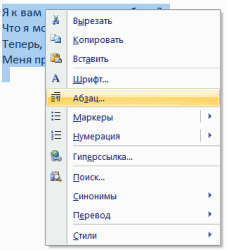
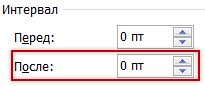

Расстояние между строками в Word
Наверное, Вы обращали внимание, что некоторые тексты неудобно читать. Вроде бы и размер букв подходящий, и шрифт, но что-то не то — абзацы как будто сжаты, и читать крайне некомфортно. Такое встречается в некоторых журналах, газетах, книгах. Вот за это самое удобство или неудобство отвечает расстояние между строками. Правильное его название — междустрочный интервал.
Пример небольшого интервала:
А вот — увеличенный:
Как выбрать
Чтобы назначить междустрочный интервал для текста, который только будет напечатан, нужно щелкнуть правой кнопкой мышки по листу (по белой части). Появится список, из которого нужно выбрать пункт «Абзац».
Откроется новое окошко. В нем нас интересует только нижняя правая часть под названием «Междустрочный». Сразу после этой надписи есть поле, где показано, какое расстояние установлено на данный момент. В примере на картинке выбрано значение «Одинарный».
Если вы нажмете на маленькую кнопку в конце этого поля, откроется список с различными вариантами: «Одинарный», «Полуторный», «Двойной», «Точно» и так далее.
Укажите нужное значение и нажмите на кнопку «ОК» внизу окошка. Теперь предложения будут печататься с выбранным промежутком.
Наиболее удобно читать текст с полуторным интервалом. Правда, за счет расширения строк он будет занимать больше места на странице.
Как изменить
Если текст уже напечатан, а расстояние между строками не устраивает, его легко можно изменить. Но для начала нужно выделить абзацы.
Чтобы это сделать, наведите курсор (стрелку или палочку) в самое начало или в самый конец. Затем нажмите левую кнопку мыши и, не отпуская ее, тяните в другой конец. Предложения закрасятся каким-то цветом (обычно серым или синим).
Теперь осталось изменить интервал. Нажмите правой кнопкой по выделенной (закрашенной) части. Появится список, из которого выберите пункт «Абзац».
Откроется окошко, где можно изменить значение.
Кстати, обратите внимание на пункт «Перед» и «После» внизу окошка. Зачастую в одном из этих полей указано какое-то значение (обычно 10). Если хотите, чтобы интервал соответствовал тому, который вы выбрали, напечатайте 0.
